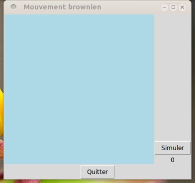
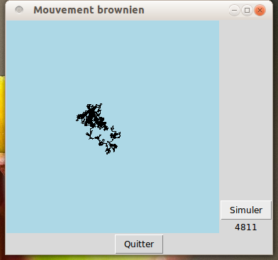
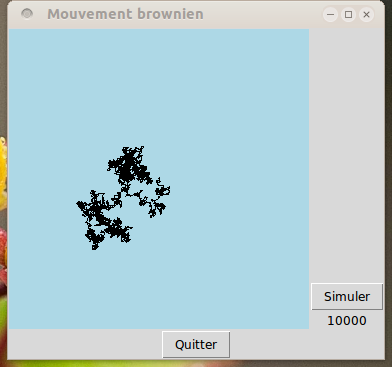

Un mouvement brownien est un mouvement aléatoire d'une particule dans
un espace. À chaque instant, la particule passe d'une position à la
suivante d'une manière aléaoire. On parle également de « marches
aléatoires ». La page wikipedia sur
le mouvement
brownien est très intéressante à lire pour en savoir un peu plus.
Introduit en physique, ce type de comportement est utilisé pour
modéliser des tas de processus. On peut par exemple simuler la
diffusion d'information, de rumeurs, ... entre des personnes ; le
mouvement brownien est un outil important en finance.
Objectifs de ce TP :
On va considérer une particule qui se déplace dans un plan. Cette
particule est initialement placée au centre du plan.
Ensuite, à chaque pas de temps, on détermine aléatoirement une
direction de déplacement et on met à jour la position de la particule
en conséquence.
Enfin, on fait une jolie interface graphique pour visualiser la
trajectoire de la particule.
À la fin, cela donnera quelque chose comme cela :
|  |  |  |
| Fenêtre avant de débutter la simulation. | Au bout de 4811 pas de temps. | Au bout de 10000 pas de temps. |
Le programme que nous allons écrire effectue les choses suivantes :
Le premier point a déjà été vu dans le passé. On va utiliser le
module tkinter pour cela. Même si c'est ce point qui donne
son attrait au programme, c'est le point le moins intéressant.
Lorsque vous cliquez sur le bouton « Simuler », votre
programme doit appeler une fonction qui va déclencher la
simulation. Nommons cette fonction faireUneSimulation. Nous
l'écrirons un peu plus loin.
Écrire le morceau de programme qui crée cette fenêtre.
Pour l'instant, on veut seulement simuler le mouvement d'une
particule. On ne s'intéresse pas à sa visualisation dans la fenêtre.
Nous définissons trois classes qui représentent les deux éléments dont
nous avons besoin pour réaliser cette simulation :
L'espace ne fait rien : c'est un (morceau de) plan, avec une
longueur et une largeur.
Il faut donc simplement définir une classe avec une méthode
d'initialisation d'un espace aux dimensions voulues.
Écrire la classe Espace et sa méthode d'initialisation __init__().
La particule constitue l'entité active de la simulation.
Une particule a deux propriétés : sa position et l'espace dans
lequel elle se meut. Elle aura donc trois variables d'instances :
son abscisse, son ordonnée et son espace.
Une particule est initialisée puis ensuite, elle se meut à chaque pas
de temps. Il faut donc définir une méhode deplacement qui
calcule sa nouvelle position, à l'instant suivant, étant donnée sa
position à l'instant courant.
Le déplacement est aléatoire. Il se déroule comme ceci :
Écrire la classe Particule et sa méthode d'initialisation __init__().
Écrire ensuite la méthode deplacement.
La classe simulation réalise une simulation. Donc, elle crée une particule et appelle ensuite la méthode deplacement répétitivement, autant de fois que l'on veut simuler de pas de temps.
Définir cette classe et écrire ses deux méthodes :
On est maintenant prêt à visualiser le mouvement brownien de la
particule en combinant les deux points que nous venons d'étudier.
Assembler les éléments créés ci-dessus pour qu'une fois le programme
lancé, l'appui sur le bouton « Simuler » provoque la
réalisation d'un certain nombre de pas de simulation (1000 par
exemple).
Je vous donne un exemple de programme qui fait ce que je demande. Il est disposnible en cliquant sur ce lien.
J'ai mis des commentaires et j'ai aussi utilisé quelques détails qui
rendent le programme mieux écrit.